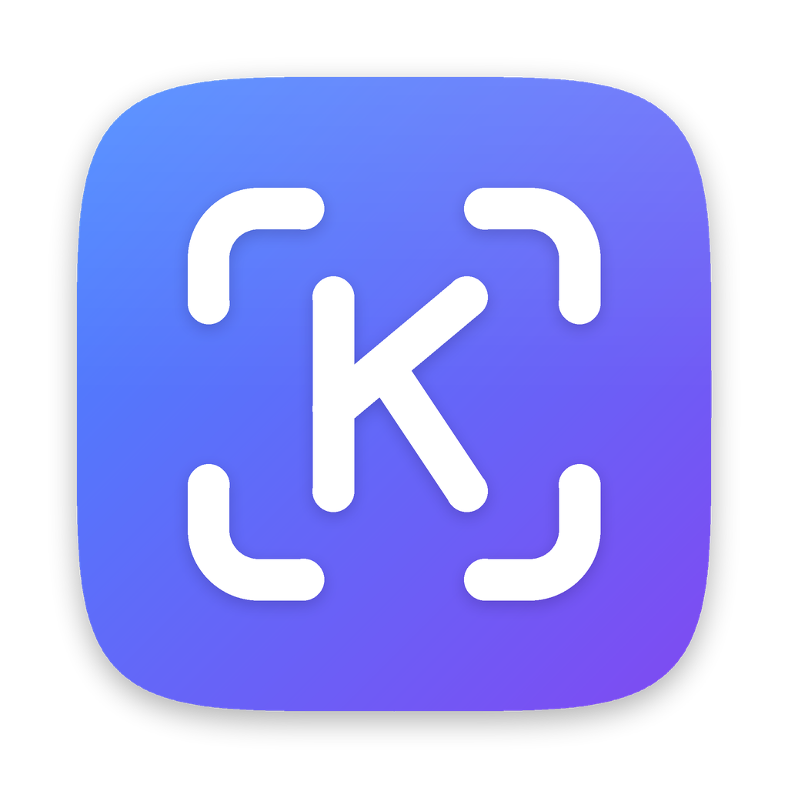

Capture & annotate
Capture an area, a window, or the entire screen. Add arrows, text, highlights, and blur. Copy, save, or share the result.

Kadr SupportScreenshots. Screen recording. On your Mac.
Take a screenshot, add an arrow, copy the text, or record a walkthrough. Kadr brings it together in your menu bar.
⇧ ⌘ 2Capture Area Explore KadrPreparing for release on the Mac App Store
macOS 15 Sequoia or later · Apple Silicon & Intel
One place to work
Capture an area, a window, or the entire screen. Add arrows, text, highlights, and blur. Copy, save, or share the result.
Record with a camera or avatar, microphone, and live annotations. Use a teleprompter that stays out of your Kadr video, then trim and edit your recording.
Select text right on a screenshot. Recognize paragraphs and tables with Apple Vision, and translate between 20 languages with Apple Translation.
Open images and PDFs in the same editor. Fill form fields, add a signature, and save a copy of the whole file.
Convert images, documents, audio, and video on your Mac. Merge, split, rotate, and compress PDFs. Your original files stay unchanged.
No account, analytics, or uploads. Screenshots, recordings, and signatures stay on your Mac unless you choose to share them.
Read the privacy policyFree & Kadr Pro
Planned for launch. Subscriptions are not yet available.
€0 free forever
For screenshots and everyday markup.
Available when Kadr launches
€24.99 per year
For recording, text, PDFs, and file conversion.
Available when Kadr launches
7 days free with an annual subscription
Everything in Free, plus:
Planned Austrian price, including VAT. App Store pricing varies by country and currency. The annual subscription renews automatically. The trial is available once and begins when you subscribe. Cancel at least 24 hours before the trial or paid period ends to prevent renewal. Subscription details & Terms of Use
Built for macOS 15 Sequoia or later, on Apple Silicon and Intel. Work without an internet connection; macOS only needs one to download translation languages or make an App Store purchase.
Get to know Kadr